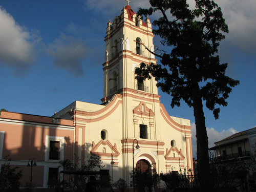
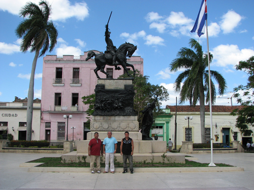

Recent Word
CAMAGUEY & LAS TUNAS CUBA TRIP - Aug. 9th - 16th
God spoke to us that it is Cuba’s time.
It is time for harvest and it is time for revival in Cuba. We went on this trip to develop a team of Pastors to organize for a Crusade/Conference.. There has not been an open air crusade in Camaguey, Cuba since TL Osborn was there in Jan. 1952.
It is time for Cuba!
It was exciting how God supernaturally connected us with Pastors of different churches and Temples. We fell in love with the people as we saw the hunger in their hearts for the fire of God to come down.
Please pray with us that the door will be open for Lightning and Thunder Ministry to hold the crusade in the big stadium
If you'd like to sow into Cuba, visit our giving page.
Be Blessed,
Dick and Rose Kessler
 This is a historic church.
 Pastor Ricardo, Dick and Clydel